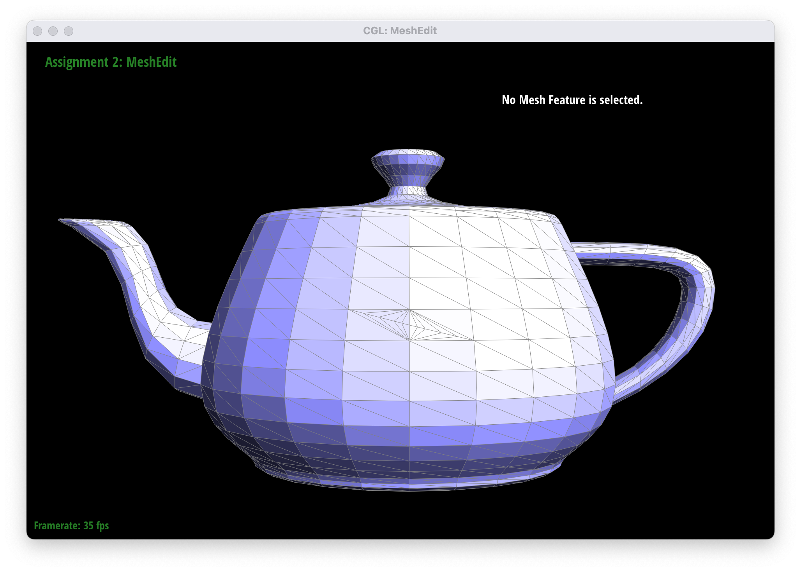
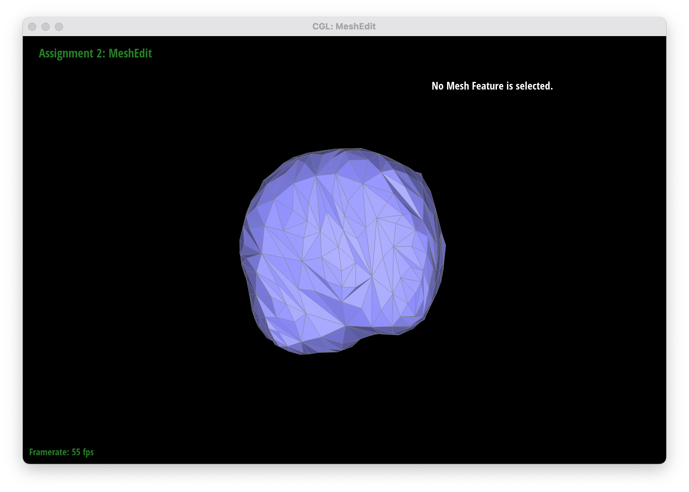
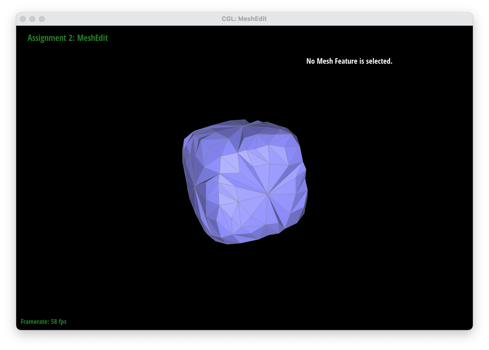

Overview
This project is dividided into two sections: Bezier Curves/Surfaces and Halfedge Data Structure.
In the first section, I have implemented Bezier curves using de Casteljau's algorithm, where I was able to
visualize Bezier curves based on positions of control points. Then, I've expanded that idea onto another dimension
to implement Bezier surfaces and render a teapot, for example.
In the second section, I have used the halfedge data structure to implement mesh editing operations. In particular,
I have implemented the vertex normals, edge flip, and edge split operations. To build on top of that, I have also implemented a loop
subdivision algorithm for mesh upsampling that allows us to subdivide a mesh into a finer mesh and represent object with better resolution.
Section I: Bezier Curves and Surfaces
Part 1: Bezier Curves with 1D de Casteljau Subdivision
**Briefly explain de Casteljau's algorithm and how you implemented it in order to evaluate Bezier curves.De Casteljau's algorithm is great because it allows us to compute Bezier curves. We define a set of control points, and then iteratively find linear interpolations of neighboring control points based on the value of t. The algorithm halts when there's only one point remaining, and then, we can construct the Bezier curve.
In this part, we are implementing function evaluateStep() that computes the intermediate points in de Casteljau's algorithm. Let's say we're given n control points and the parameter t. Then, we need to compute (n-1) intermediate control points that are lerps of the two given neighboring points. Here is a general formula: p_i' = lerp(p_i, p_(i+1), t) = (1-t)p_i + tp_(i+1). In my evaluateStep() function, I had a loop that runs points.size() - 1 times to fill the std::vector
**Take a look at the provided .bzc files and create your own Bezier curve with 6 control points of your choosing. Use this Bezier curve for your screenshots below.
I defined a new .bzc file. My curve3.bzc file consists of 6 control points:
(0.200, 0.350); (0.300, 0.600); (0.400, 0.700); (0.500, 0.200); (0.600, 0.800); (0.700, 0.700)
**Show screenshots of each step / level of the evaluation from the original control points down to the final evaluated point. Press E to step through. Toggle C to show the completed Bezier curve as well.
|
|
|
|
|
|
|
|
|
**Show a screenshot of a slightly different Bezier curve by moving the original control points around and modifying the parameter \(t\) via mouse scrolling.
Here is the generated Bezier curve when I moved the control points around and changing their default t = 0.5 parameter.
|
|
Part 2: Bezier Surfaces with Separable 1D de Casteljau
**Briefly explain how de Casteljau algorithm extends to Bezier surfaces and how you implemented it in order to evaluate Bezier surfaces.
To extend de Casteljau algorithm to Bezier surfaces, we first apply the algorithm in the u-direction,
which is the same as the algorithm for Bezier curves. We append these intermediate points to a new
array of control points. Then, we apply the algorithm in the v-direction, which is also the same as
the algorithm for Bezier curves. We append these intermediate points to a new array of control points.
We continue this process until we reach the final evaluated point.
BezierPatch::evaluateStep() is very similar BezierCurve::evaluateStep(), for the exception of having 3D points instead.
**Show a screenshot of bez/teapot.bez (not .dae) evaluated by your implementation.
|
|
Section II: Triangle Meshes and Half-Edge Data Structure
Part 3: Area-Weighted Vertex Normals
**Briefly explain how you implemented the area-weighted vertex normals.For this part, I implemented the Vertex::normal() function. Here, I iterated over all the faces incident to the given vertex by using HalfedgeCIter h that points to the halfedge and updates using h = h->twin()->next() until we reach the starting halfedge. Then, we can retrieve the 3D points of each of the three vertices of the face by using h->vertex()->position, h->next()->vertex()->position, and h->next()->next()->vertex()->position. Then, I computed the cross product between the pairs of vectices to get the normal of the face. I then added the normal to the total normal of the vertex. Finally, I normalized the total normal to get the area-weighted vertex normal.
**Show screenshots of dae/teapot.dae (not .bez) comparing teapot shading with and without vertex normals. Use Q to toggle default flat shading and Phong shading.
|
|
|
Part 4: Edge Flip
**Briefly explain how you implemented the edge flip operation and describe any interesting implementation / debugging tricks you have used.I found the "Guide to Implementing Edge Operations on a Halfedge Data Structure" resource very helpful in implementing the edge flip operation. I've closely followed the drawing where I have reassigned the halfedges to point to the correct vertices and faces after the edge flip. For this part, I only needed to use debugging std::cout statements, and the majority of the implementation worked out by me just being very careful with reassigning the pointers like halfedges and vertices.
**Show screenshots of the teapot before and after some edge flips.
Here, I flipped 4 edges on the teapot by repeatedly pressing F while selecting the edge. After pressing F again, the edge was flipped back to its original position.
|
|
|
**Write about your eventful debugging journey, if you have experienced one.
Some of the issues I've encountered while implementing edge flip:
1. When pressing F on the edge, the entire application just crashed
2. When pressing F on the edge, the region around it, turned black. It turned
out that I did not account for the reassignment of the outer edges. Looking closely at the
suggested primer and the "Guide to Implementing Edge Operations on a Halfedge Data Structure"
helped a lot.
|
|
Part 5: Edge Split
**Briefly explain how you implemented the edge split operation and describe any interesting implementation / debugging tricks you have used.
The following diagram that I drew below helped me a lot in visualizing how to implement an edge split.
The general idea is that I needed to create a new vertex m in the middle of edge e0. However, a lot of
halfedges needed to be created and reassigned. So, this part, basically required me, again, to be very careful in
assigning correct elements. There were some small details I needed to account for:
i.e the newly created vertex m had to point to the old edge;
making sure that all the pointers are correct;
creating new faces, etc.
Some of the debugging I've used was mostly printing things out with std::cout. For example, checking
the positions of the vertices and making sure that they make sense.
|
|
**Show screenshots of a mesh before and after some edge splits.
Here, I've implemented some splits in the middle of the teapot:
|

|
**Show screenshots of a mesh before and after a combination of both edge splits and edge flips.
Here is the gif showing a couple edge splits and flips performed one after the other:

|
**Write about your eventful debugging journey, if you have experienced one.
I think this part was pretty straightforward, and I just needed to closely follow the diagram that I drew. It was VERY meticulous.
Part 6: Loop Subdivision for Mesh Upsampling
**Briefly explain how you implemented the loop subdivision and describe any interesting implementation / debugging tricks you have used.We use loop subdivision to upsample our object and make it look more smooth. The high level idea is that you need to add more triangles, but we also need to update vertices positions. I've pretty much followed the steps outlined by the Task 6. The general idea is that we first want to precompute the new vertex positions of the old vertices and the new vertices that get after splitting the old edges. Then, we split the old edges and add the new vertices to the mesh. Then, we need to flip the edges that contain strictly one old and one new vertex. Finally, we want to update the vertex positions with the values that were stored within the newPosition field variable.
**Take some notes, as well as some screenshots, of your observations on how meshes behave after loop subdivision. What happens to sharp corners and edges? Can you reduce this effect by pre-splitting some edges?
Here are some of the upsampling iterations of the `torus/input.dae` object. It visually gets finer as I run through more iterations of loop subdivision. Sharp corners are somewhat preserved, but the edges become smoother.
|
|
|
**Load dae/cube.dae. Perform several iterations of loop subdivision on the cube. Notice that the cube becomes slightly asymmetric after repeated subdivisions. Can you pre-process the cube with edge flips and splits so that the cube subdivides symmetrically? Document these effects and explain why they occur. Also explain how your pre-processing helps alleviate the effects.
Here is how the cube looks like after a couple iterations of loop subdivisions. We can clearly see that the cube is pretty asymmetrical.
|
|
|
|
|

|
|
|
One way to fix this would be to pre-process the cube by splitting each of the 6 faces into smaller triangles to make the cube look more symmetrical. I just split the diagonals of each face, as well as each of the edges. This yieled more of a symmertical mesh that clearly gave better result at the first iteration of the loop subdivision. The second iteration wasn't as good though, but at least you could tell the vertices apart.

|
|
|

|